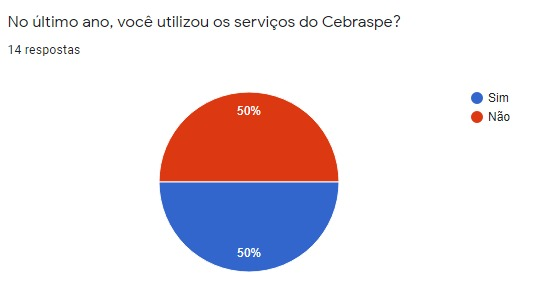

Perfil de usuários
Histórico de Versão
| Data | Versão | Descrição | Autor | Revisor |
|---|---|---|---|---|
| 26.02.2022 | 0.1 | Criação do documento sobre o perfil do usuário | Ana Carolina | Gustave |
| 02.03.2022 | 0.2 | Correção de erros | Ana Carolina | Erick |
| 10.03.2022 | 0.3 | Padronizar a navbar de forma sequencial com o ciclo de Mayhew | Ana Carolina | Daniel |
| 10.03.2022 | 0.4 | Falar sobre os participantes do questionário no documento Perfil de Usuário | Ana Carolina | Daniel |
| 10.03.2022 | 0.5 | Correção de erros do grupo de usuários | Ana Carolina | Daniel |
| 10.03.2022 | 0.6 | Adicionar um tópico fazendo correlações entre os resultados obtidos no documento Perfil de Usuário | Ana Carolina | Daniel |
| 17.04.2022 | 0.7 | Revisão | Daniel | - |
1. Introdução
Esse documento visa explorar as características de usuários e não usuários do site da Cebraspe. O primeiro passo para ampliar o entendimento a respeito dos usuários é traçar um perfil deles. Assim, perguntas como: “quem são eles?”,”quais seus objetivos?”, “qual o grau de escolaridade deles?” e outras, nos ajudarão a entender quem estamos criando um design de produto, além de futuramente nos auxiliar no recrutamento de participantes para atividades de análise e avaliação. (Courage e Baxter. 2005; Hackos e Redish. 1998)
Perfil de usuário é uma descrição detalhada das características dos usuários. Devemos identificar as características de interesses, como cargo, função, experiência, nível de instrução, atividades principais, faixa etária e outras características etnográficas. Esses dados geralmente são coletados através de entrevistas ou aplicação de questionários.
2. Metodologia
Ao iniciar um projeto, os designers começam os trabalhos com uma ideia inicial de quem são seus usuários. Porém, essa ideia pode não ser suficientemente detalhada, bem como pode se tratar apenas de uma impressão equivocada. Sendo assim, alguns dados devem ser levantados através de alguma técnica para o melhor detalhamento dos perfis de usuários.
Sendo assim, para o maior detalhamento e melhor definição, foi aplicada a técnica de questionário para levantar alguns dados do público alvo. Foi elaborado um questionário com 23 questões através do google forms no dia 24/02, sendo algumas específicas sobre o usuário, como faixa etária e escolaridade, e outras sobre as opiniões e contato com a plataforma.
3. Grupo de usuários
Os usuários no contexto deste projeto são os estudantes da universidade de brasília que utilizam ou já utilizaram o site do Cebraspe. Existem diferentes tipos de usuários a exemplo de estudantes de ensino superior, estudantes de ensino médio ou profissionais formados.
Foi observado e analisado antes de podermos concluir o questionário, que os usuários do Cebraspe podem ser alunos de ensino médio ou os que já concluíram, alunos de graduação ou os que já concluíram, servidores, professores, ex alunos ou alunos de pós graduação de acordo com a tabela da figura 1. Nela observamos que os eventos realizados pelo Cebraspe na universidade de brasília são para diversos usuários que estão dentro dos respectivos grupos já citados. Esse tópico visa definir os tipos de usuários encontrados durante a pesquisa.
De acordo com o questionário feito de maneira generalista, observamos que 85,7% dos usuários que responderam o questionário são estudantes de nível superior, 7,1% estudantes de ensino médio e 7,1% usuários que já concluíram o ensino superior. Portanto, o público alvo no qual fizeram parte da nossa pesquisa no questionário são estudantes do ensino superior.

Fonte: Relatório de Gestão do Cesbraspe 2015
4. Resultados

Fonte: google forms

Fonte: google forms

Fonte: google forms

Fonte: google forms

Fonte: google forms

Fonte: google forms

Fonte: google forms

Fonte: google forms

Fonte: google forms

Fonte: google forms

Fonte: google forms

Fonte: google forms

Fonte: google forms

Fonte: google forms

Fonte: google forms

Fonte: google forms

Fonte: google forms

Fonte: google forms

Fonte: google forms

Fonte: google forms

Fonte: google forms

Fonte: google forms

Fonte: google forms
5. Conclusão
Com base nos dados coletados por meio do formulário, pode-se traçar um perfil de usuário para o Centro Brasileiro de Pesquisa em Avaliação e Seleção e de Promoção de Eventos voltado para as avaliações, concursos e vestibulares do Brasil.
- O site do Cebraspe teve acesso de 50% dos usuários no questionário.
- A idade dos usuários varia entre 18 a 25 anos.
- O gênero dos usuários está distribuído, majoritariamente, entre homens e mulheres cis, porém com predominância no masculino.
- Os usuários residem em sua maioria no Distrito Federal.
- Os usuários são estudantes universitários, com superior incompleto.
- Os usuários que são estudantes universitários em sua maioria teve 100% dos acessos em relação ao PAS.
- Os usuários tem 50% de nível de experiência com tecnologias informacionais.
- Os usuários tem frequência de utilização de 57,1%.
- Os usuários conseguem acessar em 87,5% o site do Cebraspe através de desktop.
- Os usuários consideram o nível de 57,1% de satisfação com a utilização através do desktop numa escala de 1 a 5, sendo a respectiva como escala 4.
- A complexidade considerada a utilização da plataforma foi de 35,7% de nível 3.
- Os usuários consideram que a interface do Cebraspe é ruim em 42,9%.
- Os usuários consideram que a experiência que o Cebraspe propõe é ruim 42,9%.
- Os usuários consideram o nível de familiaridade com o fluxo das telas e navegação do Cebraspe numa escala de 1 a 5, sendo 42,9% na escala 4.
- Os usuários se sentiram perdidos ao usar o Cebraspe com o percentual de 71,4%.
- A facilidade de usar o site foi de 57,1%.
- Os usuários consideram o nível de confiança em navegar pelo Cebraspe numa escala de 1 a 5, sendo 28,6% na escala entre 3 e 4.
- Já prestaram concursos, avaliações, vestibulares ou pas num percentual de 64,3% entre 3 a 5.
- Os usuários consideram o design do site intuitivo e motivador num percentual de 64,3%.
- Os usuários classificam o design do site numa escala de 1 a 5, sendo 71,4% na escala 3.
- Os usuários consideram o aspecto que não possui com relação a navegação no site a simplicidade, sendo 35,7%.
5.1 Definindo o usuário
Portanto, concluímos a partir dessa análise que os usuários do Cebraspe são homens jovens entre 18 a 24 anos e moradores do Distrito Federal que acessaram o site no último ano. Eles são estudantes universitários que realizaram uma avaliação do cebraspe, o pas, para entrar no ensino superior. Detém um certo nível de conhecimento em tecnologia informacional e utilizam anualmente o site por meio de desktop. Esses usuários consideram que o site é medianamente satisfatório e que tem uma complexidade de utilização baixa, porém acham a experiência no site ruim mesmo tendo o fluxo de navegação bom. Eles se sentem perdidos na utilização mas possuem uma certa facilidade na usabilidade do site mesmo não tendo muito confiança. Mais da metade já fizeram algum tipo de avaliação pelo Cebraspe e consideram o design intuitivo e motivador não tão agradável, sentindo falta da simplicidade no site.
6. Bibliografia
BARBOSA, Simone. SILVA Bruno. "Interação Humano-Computador".